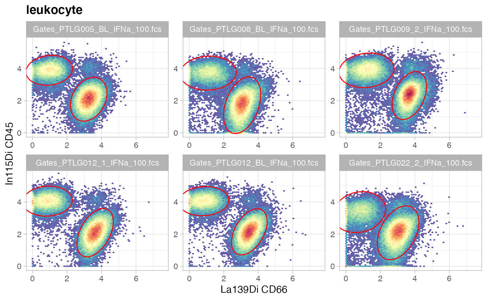

CytoGLMM Workflow for Pregnancy Dataset
Christof Seiler
Department of Statistics, Stanford University & Department of Data Science and Knowledge Engineering, Maastricht University2021-10-30
Source:vignettes/pregnancy_dataset.Rmd
pregnancy_dataset.RmdPrerequisites
Install R and RStudio. Open this Rmd file in RStudio. Then run the following code to install all required packages.
pkgs_needed = c("CytoGLMM","devtools","tidyverse","magrittr",
"flowCore","openCyto","scales","parallel",
"RColorBrewer","ggcorrplot","SummarizedExperiment",
"lme4","lmerTest","ncdfFlow","flowWorkspace","ggcyto")
letsinstall = setdiff(pkgs_needed, installed.packages())
if (length(letsinstall) > 0) {
BiocManager::install(letsinstall)
}Load packages.
library("CytoGLMM")
library("tidyverse")
library("magrittr")
library("flowCore")
library("openCyto")
library("ggcyto")
library("scales")
library("parallel")
library("RColorBrewer")
library("ggcorrplot")
library("SummarizedExperiment")
library("lme4")
library("lmerTest")
library("ncdfFlow")
library("flowWorkspace")
library("ggcyto")Set plotting style and assign computational resources.
theme_set(theme_light())
ncores = parallel::detectCores()Download and Prepare Data
FCS Files
We reanalyze mass cytometry data from Aghaeepour et al. (2017). We can download the original fcs files from FlowRepository. Here, we will focus on a subset of the original data: whole blood samples collected from 16 women during pregnancy stimulated with IFNa.
Sample Table
We save the downloaded fcs files to the FR-FCM-ZY3Q folder. Now, we prepare the sample table by parsing the fcs file names. For some studies, it might be easier to prepare a sample_table.csv text file and load it using the readr package.
fcs_files = list.files(path = "FR-FCM-ZY3Q/", pattern = "fcs")
map_time = function(x) {
if (str_detect(x, "_2_IFNa_")) "3rd trimester"
else if (str_detect(x, "_1_IFNa_")) "2st trimester"
else if (str_detect(x, "_BL_IFNa_")) "1st trimester"
else NA
}
sample_table = tibble(
donor = str_extract(fcs_files, "PTLG[0-9]{3}"),
term = sapply(fcs_files, map_time) %>% as.factor,
file_name = paste0("FR-FCM-ZY3Q/",fcs_files)
)
sample_table %<>% na.omit()
sample_table## # A tibble: 48 × 3
## donor term file_name
## <chr> <fct> <chr>
## 1 PTLG001 2st trimester FR-FCM-ZY3Q/Gates_PTLG001_1_IFNa_100.fcs
## 2 PTLG001 3rd trimester FR-FCM-ZY3Q/Gates_PTLG001_2_IFNa_100.fcs
## 3 PTLG001 1st trimester FR-FCM-ZY3Q/Gates_PTLG001_BL_IFNa_100.fcs
## 4 PTLG002 2st trimester FR-FCM-ZY3Q/Gates_PTLG002_1_IFNa_100.fcs
## 5 PTLG002 3rd trimester FR-FCM-ZY3Q/Gates_PTLG002_2_IFNa_100.fcs
## 6 PTLG002 1st trimester FR-FCM-ZY3Q/Gates_PTLG002_BL_IFNa_100.fcs
## 7 PTLG003 2st trimester FR-FCM-ZY3Q/Gates_PTLG003_1_IFNa_100.fcs
## 8 PTLG003 3rd trimester FR-FCM-ZY3Q/Gates_PTLG003_2_IFNa_100.fcs
## 9 PTLG003 1st trimester FR-FCM-ZY3Q/Gates_PTLG003_BL_IFNa_100.fcs
## 10 PTLG004 2st trimester FR-FCM-ZY3Q/Gates_PTLG004_1_IFNa_100.fcs
## # … with 38 more rowsMarker Table
Load marker isotopes and protein names. Make sure that marker names don’t have - or start with a number. This is important to be compatible with the formula syntax of R.
markers = read_csv("markers.csv")
markers$protein_name %<>% str_replace_all("-","_")
markers$protein_name %<>% make.names
markers## # A tibble: 35 × 3
## isotope protein_name type
## <chr> <chr> <chr>
## 1 Event_length Event_length none
## 2 In113Di CD235ab_CD61 phenotype
## 3 In115Di CD45 phenotype
## 4 La139Di CD66 phenotype
## 5 Pr141Di CD7 phenotype
## 6 Nd142Di CD19 phenotype
## 7 Nd143Di CD45RA phenotype
## 8 Nd144Di CD11b phenotype
## 9 Nd145Di CD4 phenotype
## 10 Nd146Di CD8a phenotype
## # … with 25 more rowsCheck if bead normalized. This only works if the bead normalizer added an additional column beadDist to the fcs.
ifelse(sum(colnames(read.FCS(sample_table$file_name[1])) == "beadDist") == 1,
yes = "bead normalized",
no = "not bead normalized")## uneven number of tokens: 571
## The last keyword is dropped.
## uneven number of tokens: 571
## The last keyword is dropped.## [1] "bead normalized"Gating
Gate with openCyto according to supplementary material (Fig. S1) from Aghaeepour et al. (2017).
# load data
ncfs = read.ncdfFlowSet(sample_table$file_name, mc.cores = ncores)## uneven number of tokens: 571
## The last keyword is dropped.
## uneven number of tokens: 571
## The last keyword is dropped.
gs = GatingSet(ncfs)
pData(gs) = cbind(pData(gs),sample_table)
trans_func = function(x) asinh(x/5)
inv_func = function(x) 5*sinh(x)
trans_obj = trans_new("asinh_cytof", trans_func, inv_func)
translist = transformerList(markers$isotope[-1], trans_obj)
gs = transform(gs, translist)
# apply gating template
gt_aghaeepour = gatingTemplate("gating_template.csv")
plot(gt_aghaeepour)
gt_gating(gt_aghaeepour, gs, mc.cores = ncores, parallel_type = "multicore")
# rename some subsets
gs_pop_set_name(gs,
"/singlet/leukocyte/mononuclear/CD3+CD19-/CD4+CD8a-/CD45RA+",
"CD4+Tnaive") %>% invisible
gs_pop_set_name(gs,
"/singlet/leukocyte/mononuclear/CD3+CD19-/CD4+CD8a-/CD45RA-",
"CD4+Tmem") %>% invisible
gs_pop_set_name(gs,
"/singlet/leukocyte/mononuclear/CD3+CD19-/CD4-CD8a+/CD45RA+",
"CD8+Tnaive") %>% invisible
gs_pop_set_name(gs,
"/singlet/leukocyte/mononuclear/CD3+CD19-/CD4-CD8a+/CD45RA-",
"CD8+Tmem") %>% invisible
gs_pop_set_name(gs, "CD3-CD19+", "B") %>% invisible
gs_pop_set_name(gs, "CD3+CD19-", "T") %>% invisible
gs_pop_set_name(gs, "CD4+CD8a-", "CD4+T") %>% invisible
gs_pop_set_name(gs, "CD4-CD8a+", "CD8+T") %>% invisible
gs_pop_set_name(gs, "CD7+", "NK") %>% invisible
gs_pop_set_name(gs, "CD14+CD16-", "cMC") %>% invisible
gs_pop_set_name(gs, "CD14-CD16+", "ncMC") %>% invisible
gs_pop_set_name(gs, "CD14+CD16+", "intMC") %>% invisible
plot(gs)
# hide nodes
nodes_to_hide = c(
"granulocyte", "CD19+", "CD3+", "CD3+CD19+",
"CD8a+", "CD4+", "CD16+", "CD14+", "CD14-CD16-",
"CD4+CD8a+", "CD4+Tnaive/CD25+", "CD4+Tmem/CD25+",
"CD4+Tnaive/FoxP3+", "CD4+Tmem/FoxP3+"
)
for(this_node in nodes_to_hide) setNode(gs, this_node, FALSE)
plot(gs)Visualize gates with ggcyto.
set.seed(0xdada)
ids = sample(length(gs), size = 6)
ggcyto(gs[ids], aes(x = CD66, y = CD45), subset = "leukocyte") +
ggcyto_par_set(limits = "instrument") + geom_hex(bins = 64) +
geom_gate(c("mononuclear","granulocyte"))
ggcyto(gs[ids], aes(x = CD3, y = CD19), subset = "mononuclear") +
ggcyto_par_set(limits = "instrument") + geom_hex(bins = 64) +
geom_gate(c("B","T","CD3-CD19-"))
ggcyto(gs[ids], aes(x = CD14, y = CD7), subset = "CD3-CD19-") +
ggcyto_par_set(limits = "instrument") + geom_hex(bins = 64) +
geom_gate("NK")
ggcyto(gs[ids], aes(x = CD14, y = CD16), subset = "CD7-") +
ggcyto_par_set(limits = "instrument") + geom_hex(bins = 64) +
geom_gate(c("cMC","ncMC","intMC"))
ggcyto(gs[ids], aes(x = CD4, y = CD8a), subset = "T") +
ggcyto_par_set(limits = "instrument") + geom_hex(bins = 64) +
geom_gate(c("CD4+T","CD8+T","CD4-CD8a-"))
ggcyto(gs[ids], aes(x = TCRgd, y = CD3), subset = "CD4-CD8a-") +
ggcyto_par_set(limits = "instrument") + geom_hex(bins = 64) +
geom_gate("gdT")
ggcyto(gs[ids], aes(x = CD4, y = CD45RA), subset = "CD4+T") +
ggcyto_par_set(limits = "instrument") + geom_hex(bins = 64) +
geom_gate(c("CD4+Tnaive","CD4+Tmem"))
ggcyto(gs[ids], aes(x = FoxP3, y = CD25), subset = "CD4+Tnaive") +
ggcyto_par_set(limits = "instrument") + geom_hex(bins = 64) +
geom_gate("Tregsnaive")
ggcyto(gs[ids], aes(x = FoxP3, y = CD25), subset = "CD4+Tmem") +
ggcyto_par_set(limits = "instrument") + geom_hex(bins = 64) +
geom_gate("Tregsmem")
ggcyto(gs[ids], aes(x = CD8a, y = CD45RA), subset = "CD8+T") +
ggcyto_par_set(limits = "instrument") + geom_hex(bins = 64) +
geom_gate(c("CD8+Tnaive","CD8+Tmem"))Combine cell types of interest into one data frame. Change marker name from isotope name to protein name and remove markers that are unmapped.
nodes_exclude = c("root","singlet","leukocyte","mononuclear",
"CD3-CD19-","CD7-","CD4-CD8a-",
"CD4+T","CD8+T","T")
nodes_all = gs_get_pop_paths(gs, path = "auto")
nodes_select = nodes_all[!nodes_all %in% nodes_exclude]
df_samples = lapply(nodes_select, function(celltype) {
fset = gs_pop_get_data(gs, celltype)
lapply(seq(fset), function(sample_id) {
marker_ids = which(colnames(fset) %in% markers$isotope)
exprs = as_tibble(exprs(fset[[sample_id]]))[,marker_ids]
file_name = pData(fset[sample_id])$file_name
exprs %>% add_column(file_name, celltype)
}) %>% bind_rows
}) %>% bind_rows
df_samples %<>% inner_join(sample_table,by = "file_name")
oldnames = markers$isotope
newnames = markers$protein_name
df_samples %<>% rename_at(vars(all_of(oldnames)), ~ newnames)
str(df_samples)## tibble [3,669,504 × 39] (S3: tbl_df/tbl/data.frame)
## $ Event_length: num [1:3669504] 33 26 21 51 55 32 66 27 35 55 ...
## $ CD235ab_CD61: num [1:3669504] 0 0.0736 0.3772 0 0 ...
## $ CD45 : num [1:3669504] 4.08 4.13 5.03 4.47 4.68 ...
## $ CD66 : num [1:3669504] 0.538 1.082 1.312 0.261 1.083 ...
## $ CD7 : num [1:3669504] 5.2 4.08 4.63 5.39 6.05 ...
## $ CD19 : num [1:3669504] 0.134 0.169 1.176 1.116 0.199 ...
## $ CD45RA : num [1:3669504] 4.237 3.443 3.842 4.319 0.241 ...
## $ CD11b : num [1:3669504] 2.7 2.07 1.92 2.49 1.9 ...
## $ CD4 : num [1:3669504] 0.2652 0 0 0.0955 0.1431 ...
## $ CD8a : num [1:3669504] 0.2344 0.0158 0.7656 0 0.2404 ...
## $ CD11c : num [1:3669504] 2.184 2.21 1.91 0.213 2.85 ...
## $ CD123 : num [1:3669504] 0.0249 0 0.0688 0.3725 0.0723 ...
## $ pCREB : num [1:3669504] 1.526 1.36 1.668 0.947 0.812 ...
## $ pSTAT5 : num [1:3669504] 2.19 1.16 1.54 1.68 2.02 ...
## $ pP38 : num [1:3669504] 0.286 0.348 0.797 0.862 0.724 ...
## $ TCRgd : num [1:3669504] 0.3318 0.2139 0 0.0761 0 ...
## $ pSTAT1 : num [1:3669504] 3.46 2.7 3.77 3.14 2.92 ...
## $ pSTAT3 : num [1:3669504] 2.27 2.22 1.75 2.07 2.13 ...
## $ prpS6 : num [1:3669504] 1.234 0.439 0.296 1.481 0 ...
## $ CD33 : num [1:3669504] 1.2231 0.0593 0.1261 0.6798 0.6141 ...
## $ pMAPKAPK : num [1:3669504] 1.78 2.01 2.51 2.51 1.95 ...
## $ Tbet2 : num [1:3669504] 2.24 2.74 3.76 3.08 2.59 ...
## $ FoxP3 : num [1:3669504] 0.947 0.471 0.489 1.066 0.901 ...
## $ IkB : num [1:3669504] 1.024 0.906 1.075 1.161 1.343 ...
## $ CD16 : num [1:3669504] 0.1013 0.1794 0 0.144 0.0644 ...
## $ pNFkB : num [1:3669504] 1.121 1.712 0.945 2.037 1.435 ...
## $ pERK1_2 : num [1:3669504] 0.1168 0 0.2711 0 0.0282 ...
## $ CD25 : num [1:3669504] 0 0 0.183 0.243 0 ...
## $ CD3 : num [1:3669504] 0.364 0 0 0 0 ...
## $ CD15 : num [1:3669504] 0.115 0.946 0.367 0.248 0.497 ...
## $ HLA_DR : num [1:3669504] 2.127 1.535 0.201 0.531 1.101 ...
## $ CD14 : num [1:3669504] 0.143 0 0 0 0 ...
## $ CD56 : num [1:3669504] 4.82 2.8 3.68 3.89 5.25 ...
## $ DNA1 : num [1:3669504] 3.33 3.83 4.36 3.76 3.87 ...
## $ DNA2 : num [1:3669504] 4.2 4.25 4.9 4.44 4.55 ...
## $ file_name : chr [1:3669504] "FR-FCM-ZY3Q/Gates_PTLG001_1_IFNa_100.fcs" "FR-FCM-ZY3Q/Gates_PTLG001_1_IFNa_100.fcs" "FR-FCM-ZY3Q/Gates_PTLG001_1_IFNa_100.fcs" "FR-FCM-ZY3Q/Gates_PTLG001_1_IFNa_100.fcs" ...
## $ celltype : chr [1:3669504] "NK" "NK" "NK" "NK" ...
## $ donor : chr [1:3669504] "PTLG001" "PTLG001" "PTLG001" "PTLG001" ...
## $ term : Factor w/ 3 levels "1st trimester",..: 2 2 2 2 2 2 2 2 2 2 ...
## ..- attr(*, "names")= chr [1:3669504] "Gates_PTLG001_1_IFNa_100.fcs" "Gates_PTLG001_1_IFNa_100.fcs" "Gates_PTLG001_1_IFNa_100.fcs" "Gates_PTLG001_1_IFNa_100.fcs" ...List cell counts per donor and trimester.
table(df_samples$donor,df_samples$term)##
## 1st trimester 2st trimester 3rd trimester
## PTLG001 82937 61408 80265
## PTLG002 66573 92982 74721
## PTLG003 108142 80475 75041
## PTLG004 48169 66194 57682
## PTLG005 81455 79486 87003
## PTLG007 115016 98249 135821
## PTLG008 83824 88448 73391
## PTLG009 103724 83306 96440
## PTLG010 58504 68719 76391
## PTLG012 72357 62635 68484
## PTLG018 66348 86527 92544
## PTLG019 78024 74177 71328
## PTLG020 44037 37367 49138
## PTLG022 89129 52931 70198
## PTLG024 117099 77125 79094
## PTLG029 54313 56368 45915Plot abundance of each celltype per sample.
df_abundance = df_samples %>%
group_by(file_name, donor, term, celltype) %>%
tally()
ggplot(df_abundance, aes(term, n, color = term)) +
geom_violin() +
geom_jitter(width = 0.2, alpha = 0.5) +
facet_wrap(~celltype, nrow = 2) +
theme(axis.text.x = element_blank())Focus on functional proteins.
## [1] "pCREB" "pSTAT5" "pP38" "pSTAT1" "pSTAT3" "prpS6"
## [7] "pMAPKAPK" "IkB" "pNFkB" "pERK1_2"Declare the columns in df_samples that are not protein markers. In our example, we have donor ID, time point when the sample was collected, FCS filename, and the cell type that we have defined through gating.
## [1] "donor" "term" "file_name" "celltype"Data Exploration
MDS
MDS on median marker expression of all cell types following Nowicka et al. (2017).
CytoGLMM::plot_mds(df_samples,
protein_names = protein_names,
sample_info_names = sample_info_names,
color = "celltype")Subset to NK cells to illustrate visualization for one cell type.
MDS on median marker expression of NK cells.
CytoGLMM::plot_mds(df_samples_subset,
protein_names = protein_names,
sample_info_names = sample_info_names,
color = "term")Heatmap
Heatmap of median marker expression of all cell types following Nowicka et al. (2017).
CytoGLMM::plot_heatmap(df_samples,
protein_names = protein_names,
sample_info_names = sample_info_names,
arrange_by_1 = "term",
arrange_by_2 = "celltype")Heatmap of median marker expression of NK cells.
CytoGLMM::plot_heatmap(df_samples_subset,
protein_names = protein_names,
sample_info_names = sample_info_names,
arrange_by_1 = "term")PCA
PCA plot of all cell types.
CytoGLMM::plot_prcomp(df_samples,
protein_names = protein_names,
color_var = "celltype",
repel = TRUE)PCA plot of NK cells.
CytoGLMM::plot_prcomp(df_samples_subset,
protein_names = protein_names,
color_var = "term",
repel = TRUE)LDA
LDA plot of NK cells.
CytoGLMM::plot_lda(df_samples_subset,
protein_names,
group = "term",
cor_scaling_factor = 2.5,
arrow_color = "black",
marker_color = "black",
marker_size = 4)Density Plots
Density plots of one marker for all donors.
ggplot(df_samples_subset, aes_string(x = "pCREB", color = "term")) +
geom_density() +
facet_wrap(~donor)Two-Dimensional Histograms
Two-dimensional histograms for plotting two markers for all donors.
colorscale = scale_fill_gradientn(
colors = rev(brewer.pal(9, "YlGnBu")),
values = c(0, exp(seq(-5, 0, length.out = 100)))
)
ggplot(df_samples_subset, aes_string(x = "pSTAT1", y = "pSTAT3")) +
geom_hex(bins = 64) +
colorscale +
coord_fixed() +
facet_wrap(~donor)Two-dimensional histograms for group comparisons.
ggplot(df_samples_subset, aes_string(x = "pSTAT1", y = "pSTAT3")) +
geom_hex(bins = 64) +
colorscale +
coord_fixed() +
facet_wrap(~term)NK cell count. List the smallest and largest.
## # A tibble: 48 × 3
## # Groups: term [3]
## term donor n
## <fct> <chr> <int>
## 1 2st trimester PTLG020 1759
## 2 3rd trimester PTLG024 2380
## 3 2st trimester PTLG024 2738
## 4 2st trimester PTLG001 2910
## 5 3rd trimester PTLG001 3125
## 6 3rd trimester PTLG020 3230
## 7 1st trimester PTLG020 3412
## 8 1st trimester PTLG001 3474
## 9 3rd trimester PTLG009 3764
## 10 2st trimester PTLG009 4004
## # … with 38 more rows## # A tibble: 48 × 3
## # Groups: term [3]
## term donor n
## <fct> <chr> <int>
## 1 2st trimester PTLG008 13956
## 2 1st trimester PTLG008 13395
## 3 2st trimester PTLG029 9104
## 4 2st trimester PTLG002 9037
## 5 1st trimester PTLG022 8222
## 6 1st trimester PTLG003 8087
## 7 3rd trimester PTLG008 7953
## 8 2st trimester PTLG018 7781
## 9 3rd trimester PTLG018 7620
## 10 2st trimester PTLG004 7579
## # … with 38 more rowsMarker Correlations
Plot marker correlations.
mcor = cor(df_samples_subset %>% dplyr::select(protein_names))
ggcorrplot(mcor, hc.order = TRUE, type = "lower",
outline.col = "lightgray",
colors = c("#6D9EC1", "white", "#E46726"))Regression Analysis on Summarized Data
Classical differential analysis approach comparing median marker expressions (Nowicka et al. 2017).
Plot Median Marker Expression
Plot all celltypes.
df_median = df_samples %>%
group_by(file_name, donor, term, celltype) %>%
summarise_at(protein_names, median)
df_median_long = gather(df_median, protein_name, median_expr,
-file_name, -donor, -term, -celltype)
ggplot(df_median_long, aes(protein_name, median_expr, color = term)) +
geom_violin() +
facet_wrap(~celltype) +
theme(axis.text.x = element_text(angle = 90, vjust=0))Zoom in on NK cells.
df_median_long %<>% dplyr::filter(celltype == "NK")
ggplot(df_median_long, aes(term, median_expr, color = term)) +
geom_violin() +
geom_jitter(width = 0.2, alpha = 0.5) +
facet_wrap(~ protein_name, nrow = 2) +
theme(axis.text.x = element_blank()) +
ggtitle("NK")Zoom in on marker pSTAT1.
ggplot(df_median, aes(term, pSTAT1, color = term)) +
geom_violin() +
geom_jitter(width = 0.2, alpha = 0.5) +
facet_wrap(~celltype, nrow = 2) +
theme(axis.text.x = element_blank())Linear Mixed Model
Mixed model with median expression as response variable, experimental condition as explanatory variable, and donor as random effect. Fit separate models for each protein and celltype combination.
calc_pvalue = function(fit) {
summ = summary(fit)
coefficients(summ)["term3rd trimester", "Pr(>|t|)"]
}
df_median_long = gather(df_median, protein_name, median_expr,
-file_name, -donor, -term, -celltype)
df_fits = df_median_long %>%
group_by(protein_name, celltype) %>%
nest() %>%
mutate(fit = map(data, ~ lmer(median_expr ~ term + (1|donor), .))) %>%
mutate(pvalue_unadj = map_dbl(fit, ~ calc_pvalue(.))) %>%
mutate(pvalue_adj = p.adjust(pvalue_unadj, method = "BH")) %>%
dplyr::select(protein_name, celltype, pvalue_adj)
df_fits %>%
dplyr::filter(pvalue_adj < 0.05) %>%
dplyr::arrange(celltype) %>%
print(n = Inf)## # A tibble: 45 × 3
## # Groups: celltype, protein_name [45]
## protein_name celltype pvalue_adj
## <chr> <chr> <dbl>
## 1 pSTAT1 B 0.00223
## 2 pMAPKAPK B 0.0297
## 3 pNFkB B 0.0115
## 4 pERK1_2 B 0.0310
## 5 pSTAT5 CD4+Tmem 0.0194
## 6 pSTAT1 CD4+Tmem 0.0000128
## 7 IkB CD4+Tmem 0.0183
## 8 pNFkB CD4+Tmem 0.0000356
## 9 pERK1_2 CD4+Tmem 0.00748
## 10 pCREB CD4+Tnaive 0.00146
## 11 pSTAT5 CD4+Tnaive 0.000983
## 12 pP38 CD4+Tnaive 0.0311
## 13 pSTAT1 CD4+Tnaive 0.0000829
## 14 prpS6 CD4+Tnaive 0.0184
## 15 IkB CD4+Tnaive 0.000118
## 16 pNFkB CD4+Tnaive 0.0000421
## 17 pSTAT5 CD8+Tmem 0.0364
## 18 pSTAT1 CD8+Tmem 0.0000946
## 19 pSTAT3 CD8+Tmem 0.0440
## 20 pNFkB CD8+Tmem 0.00662
## 21 pERK1_2 CD8+Tmem 0.0142
## 22 pCREB CD8+Tnaive 0.0164
## 23 pSTAT5 CD8+Tnaive 0.00223
## 24 pP38 CD8+Tnaive 0.0437
## 25 pSTAT1 CD8+Tnaive 0.00000453
## 26 prpS6 CD8+Tnaive 0.00421
## 27 pMAPKAPK CD8+Tnaive 0.0328
## 28 IkB CD8+Tnaive 0.00618
## 29 pNFkB CD8+Tnaive 0.000159
## 30 pERK1_2 CD8+Tnaive 0.0356
## 31 pSTAT1 cMC 0.000489
## 32 pNFkB cMC 0.0232
## 33 pSTAT1 gdT 0.0236
## 34 prpS6 gdT 0.0452
## 35 prpS6 intMC 0.0374
## 36 pSTAT5 ncMC 0.0454
## 37 IkB ncMC 0.0204
## 38 pERK1_2 ncMC 0.0175
## 39 pSTAT1 NK 0.00000000684
## 40 pNFkB NK 0.00126
## 41 pERK1_2 NK 0.00281
## 42 pSTAT1 Tregsmem 0.000276
## 43 pNFkB Tregsmem 0.0158
## 44 pSTAT1 Tregsnaive 0.00517
## 45 pNFkB Tregsnaive 0.0159Regression Analysis on All The Data
For the regression analysis, we will focus only on NK cells, and compare the first and third trimester. We can repeat the same analysis for each cell type of interest, and trimester combination.
df_samples_subset %<>% dplyr::filter(term != "2st trimester")
df_samples_subset$term %<>% droplevels
df_samples_subset$term %<>% factor(levels = c("1st trimester",
"3rd trimester"))Generalized Linear Mixed Model
Fit a Generalized Linear Mixed Model (GLMM) with donor random effects. This function is a wrapper around the package mbest (Perry 2017).
glmm_fit = CytoGLMM::cytoglmm(df_samples_subset,
protein_names = protein_names,
condition = "term", group = "donor")
glmm_fit## number of cells per group and condition:
## 1st trimester 3rd trimester
## PTLG001 3474 3125
## PTLG002 5438 6120
## PTLG003 8087 5035
## PTLG004 4991 6501
## PTLG005 6105 5074
## PTLG007 5766 5302
## PTLG008 13395 7953
## PTLG009 5177 3764
## PTLG010 4273 4908
## PTLG012 6624 5643
## PTLG018 4083 7620
## PTLG019 6671 4542
## PTLG020 3412 3230
## PTLG022 8222 5709
## PTLG024 4100 2380
## PTLG029 7211 4937
##
## proteins included in the analysis:
## pCREB pSTAT5 pP38 pSTAT1 pSTAT3 prpS6 pMAPKAPK IkB pNFkB pERK1_2
##
## condition compared: term
## grouping variable: donor
plot(glmm_fit)## # A tibble: 3 × 3
## protein_name pvalues_unadj pvalues_adj
## <chr> <dbl> <dbl>
## 1 pSTAT3 6.18e-21 6.18e-20
## 2 pSTAT1 6.58e-19 3.29e-18
## 3 pSTAT5 7.47e- 9 2.49e- 8Add pSTAT1, pSTAT3, and pSTAT5 into one marker.
df_samples_subset %<>% mutate(pSTAT_sum = pSTAT1+pSTAT3+pSTAT5)
protein_names_sum = c(
"pSTAT_sum",
protein_names[!protein_names %in% c("pSTAT1","pSTAT3","pSTAT5")]
)
glmm_fit = CytoGLMM::cytoglmm(df_samples_subset,
protein_names = protein_names_sum,
condition = "term", group = "donor")
plot(glmm_fit)## # A tibble: 1 × 3
## protein_name pvalues_unadj pvalues_adj
## <chr> <dbl> <dbl>
## 1 pSTAT_sum 0.000000189 0.00000151Take differences between pSTAT1, pSTAT3, and pSTAT5.
df_samples_subset %<>% mutate(pSTAT3_minus_pSTAT1 = pSTAT3-pSTAT1)
df_samples_subset %<>% mutate(pSTAT5_minus_pSTAT1 = pSTAT5-pSTAT1)
protein_names_diff = c(
"pSTAT3_minus_pSTAT1","pSTAT5_minus_pSTAT1",
protein_names[!protein_names %in% c("pSTAT3","pSTAT5")]
)
glmm_fit = CytoGLMM::cytoglmm(df_samples_subset,
protein_names = protein_names_diff,
condition = "term", group = "donor")
plot(glmm_fit)## # A tibble: 3 × 3
## protein_name pvalues_unadj pvalues_adj
## <chr> <dbl> <dbl>
## 1 pSTAT3_minus_pSTAT1 6.18e-21 6.18e-20
## 2 pSTAT5_minus_pSTAT1 7.47e- 9 3.74e- 8
## 3 pSTAT1 2.19e- 4 7.31e- 4Add interactions between pSTAT1, pSTAT3, and pSTAT5.
df_samples_subset %<>% mutate(pSTAT_I15 = pSTAT1*pSTAT5)
df_samples_subset %<>% mutate(pSTAT_I35 = pSTAT3*pSTAT5)
df_samples_subset %<>% mutate(pSTAT_I13 = pSTAT1*pSTAT3)
df_samples_subset %<>% mutate(pSTAT_I135 = pSTAT1*pSTAT3*pSTAT5)
protein_names_interactions = c(protein_names,"pSTAT_I15","pSTAT_I35",
"pSTAT_I13","pSTAT_I135")
glmm_fit = CytoGLMM::cytoglmm(df_samples_subset,
protein_names = protein_names_interactions,
condition = "term", group = "donor")
plot(glmm_fit)
## # A tibble: 6 × 3
## protein_name pvalues_unadj pvalues_adj
## <chr> <dbl> <dbl>
## 1 pSTAT3 2.52e-13 3.53e-12
## 2 pSTAT1 3.47e-11 2.43e-10
## 3 pSTAT_I13 1.82e- 4 8.48e- 4
## 4 pERK1_2 1.55e- 2 4.82e- 2
## 5 pNFkB 1.90e- 2 4.82e- 2
## 6 pSTAT5 2.06e- 2 4.82e- 2Generalized Linear Model with Bootstrap
Instead of modeling the donor effect, we can use bootstrap resampling. In our experience, this type of regression gives also good results when samples are not matched between conditions on the same donor.
glm_fit = CytoGLMM::cytoglm(df_samples_subset,
num_boot = 1000,
protein_names = protein_names,
condition = "term", group = "donor",
num_cores = ncores)
glm_fit##
## #######################
## ## paired analysis ####
## #######################
##
## number of bootstrap samples: 1000
##
## number of cells per group and condition:
## 1st trimester 3rd trimester
## PTLG001 3474 3125
## PTLG002 5438 6120
## PTLG003 8087 5035
## PTLG004 4991 6501
## PTLG005 6105 5074
## PTLG007 5766 5302
## PTLG008 13395 7953
## PTLG009 5177 3764
## PTLG010 4273 4908
## PTLG012 6624 5643
## PTLG018 4083 7620
## PTLG019 6671 4542
## PTLG020 3412 3230
## PTLG022 8222 5709
## PTLG024 4100 2380
## PTLG029 7211 4937
##
## proteins included in the analysis:
## pCREB pSTAT5 pP38 pSTAT1 pSTAT3 prpS6 pMAPKAPK IkB pNFkB pERK1_2
##
## condition compared: term
## grouping variable: donor
plot(glm_fit)## # A tibble: 3 × 3
## protein_name pvalues_unadj pvalues_adj
## <chr> <dbl> <dbl>
## 1 pSTAT1 0.002 0.00667
## 2 pSTAT3 0.002 0.00667
## 3 pSTAT5 0.002 0.00667Mixture of Regressions
Fit a mixture of regression model to identity clusters of donors or outliers. This function is a wrapper around the package flexmix (Grün and Leisch 2007).
num_donors = nlevels(as.factor(df_samples_subset$donor))
mix_fit = CytoGLMM::cytoflexmix(df_samples_subset,
protein_names = protein_names,
condition = "term", group = "donor",
ks = 1:num_donors,
num_cores = ncores)
plot(mix_fit)The plotting function automatically uses the BIC criterion to select the number of clusters.
plot_model_selection(mix_fit)SummarizedExperiment
We create a SummarizedExperiment object containing marker, sample table, and untransformed protein counts. This way we can store all the information of this experiment in one file and load it again in subsequent analyses.
markers %<>% dplyr::filter(type != "none")
d_combined = df_samples %>%
dplyr::select(markers$protein_name) %>%
dplyr::mutate_all(.funs = inv_func) %>%
dplyr::mutate_all(.funs = round) %>%
as.matrix
row_data = df_samples %>%
dplyr::select(sample_info_names) %>%
as.data.frame
col_data = markers %>% as.data.frame
se_aghaeepour2017immune = SummarizedExperiment(
assays = list(exprs = d_combined),
colData = col_data,
rowData = row_data
)
save(se_aghaeepour2017immune, file = "se_aghaeepour2017immune.Rdata")Session Info
## R version 4.1.0 (2021-05-18)
## Platform: x86_64-apple-darwin17.0 (64-bit)
## Running under: macOS Big Sur 10.16
##
## Matrix products: default
## BLAS: /Library/Frameworks/R.framework/Versions/4.1/Resources/lib/libRblas.dylib
## LAPACK: /Library/Frameworks/R.framework/Versions/4.1/Resources/lib/libRlapack.dylib
##
## locale:
## [1] en_US.UTF-8/en_US.UTF-8/en_US.UTF-8/C/en_US.UTF-8/en_US.UTF-8
##
## attached base packages:
## [1] grid stats4 parallel stats graphics grDevices utils
## [8] datasets methods base
##
## other attached packages:
## [1] Rgraphviz_2.38.0 graph_1.72.0
## [3] lmerTest_3.1-3 lme4_1.1-27.1
## [5] Matrix_1.3-4 SummarizedExperiment_1.24.0
## [7] Biobase_2.54.0 GenomicRanges_1.46.0
## [9] GenomeInfoDb_1.30.0 IRanges_2.28.0
## [11] S4Vectors_0.32.0 BiocGenerics_0.40.0
## [13] MatrixGenerics_1.6.0 matrixStats_0.61.0
## [15] ggcorrplot_0.1.3 RColorBrewer_1.1-2
## [17] scales_1.1.1 ggcyto_1.22.0
## [19] flowWorkspace_4.6.0 ncdfFlow_2.40.0
## [21] BH_1.75.0-0 RcppArmadillo_0.10.7.0.0
## [23] openCyto_2.6.0 flowCore_2.6.0
## [25] magrittr_2.0.1 forcats_0.5.1
## [27] stringr_1.4.0 dplyr_1.0.7
## [29] purrr_0.3.4 readr_2.0.2
## [31] tidyr_1.1.4 tibble_3.1.5
## [33] ggplot2_3.3.5 tidyverse_1.3.1
## [35] CytoGLMM_1.3.0 BiocStyle_2.22.0
##
## loaded via a namespace (and not attached):
## [1] ModelMetrics_1.2.2.2 R.methodsS3_1.8.1 ragg_1.1.3
## [4] bit64_4.0.5 knitr_1.36 DelayedArray_0.20.0
## [7] R.utils_2.11.0 data.table_1.14.2 rpart_4.1-15
## [10] RCurl_1.98-1.5 doParallel_1.0.16 generics_0.1.1
## [13] cowplot_1.1.1 future_1.22.1 bit_4.0.4
## [16] tzdb_0.2.0 xml2_1.3.2 lubridate_1.8.0
## [19] isoband_0.2.5 assertthat_0.2.1 gower_0.2.2
## [22] xfun_0.27 hms_1.1.1 jquerylib_0.1.4
## [25] evaluate_0.14 DEoptimR_1.0-9 fansi_0.5.0
## [28] dbplyr_2.1.1 readxl_1.3.1 DBI_1.1.1
## [31] tmvnsim_1.0-2 ellipsis_0.3.2 ks_1.13.2
## [34] ggpubr_0.4.0 backports_1.3.0 cytolib_2.6.0
## [37] bookdown_0.24 RcppParallel_5.1.4 vctrs_0.3.8
## [40] abind_1.4-5 caret_6.0-90 cachem_1.0.6
## [43] withr_2.4.2 aws.signature_0.6.0 robustbase_0.93-9
## [46] vroom_1.5.5 mclust_5.4.7 mnormt_2.0.2
## [49] bigmemory_4.5.36 cluster_2.1.2 crayon_1.4.2
## [52] ellipse_0.4.2 labeling_0.4.2 recipes_0.1.17
## [55] pkgconfig_2.0.3 nlme_3.1-153 nnet_7.3-16
## [58] rlang_0.4.12 globals_0.14.0 lifecycle_1.0.1
## [61] sandwich_3.0-1 bigmemory.sri_0.1.3 modelr_0.1.8
## [64] cellranger_1.1.0 rprojroot_2.0.2 flowClust_3.32.0
## [67] carData_3.0-4 boot_1.3-28 zoo_1.8-9
## [70] reprex_2.0.1 base64enc_0.1-3 pheatmap_1.0.12
## [73] png_0.1-7 bitops_1.0-7 R.oo_1.24.0
## [76] KernSmooth_2.23-20 pROC_1.18.0 speedglm_0.3-3
## [79] mbest_0.6 parallelly_1.28.1 rstatix_0.7.0
## [82] jpeg_0.1-9 ggsignif_0.6.3 aws.s3_0.3.21
## [85] memoise_2.0.0 plyr_1.8.6 hexbin_1.28.2
## [88] zlibbioc_1.40.0 compiler_4.1.0 hdrcde_3.4
## [91] factoextra_1.0.7 clue_0.3-60 rrcov_1.6-0
## [94] cli_3.1.0 XVector_0.34.0 listenv_0.8.0
## [97] MASS_7.3-54 tidyselect_1.1.1 stringi_1.7.5
## [100] RProtoBufLib_2.6.0 textshaping_0.3.6 highr_0.9
## [103] yaml_2.2.1 latticeExtra_0.6-29 ggrepel_0.9.1
## [106] tools_4.1.0 rio_0.5.27 future.apply_1.8.1
## [109] rstudioapi_0.13 foreign_0.8-81 foreach_1.5.1
## [112] logging_0.10-108 gridExtra_2.3 prodlim_2019.11.13
## [115] farver_2.1.0 digest_0.6.28 BiocManager_1.30.16
## [118] pracma_2.3.3 lava_1.6.10 Rcpp_1.0.7
## [121] car_3.0-11 broom_0.7.9 fda_5.5.0
## [124] httr_1.4.2 IDPmisc_1.1.20 flowStats_4.6.0
## [127] colorspace_2.0-2 rvest_1.0.2 XML_3.99-0.8
## [130] fs_1.5.0 rainbow_3.6 splines_4.1.0
## [133] RBGL_1.70.0 pkgdown_1.6.1 flexmix_2.3-17
## [136] systemfonts_1.0.3 jsonlite_1.7.2 nloptr_1.2.2.2
## [139] fds_1.8 strucchange_1.5-2 corpcor_1.6.10
## [142] timeDate_3043.102 modeltools_0.2-23 ipred_0.9-12
## [145] R6_2.5.1 pillar_1.6.4 htmltools_0.5.2
## [148] glue_1.4.2 fastmap_1.1.0 minqa_1.2.4
## [151] BiocParallel_1.28.0 deSolve_1.30 class_7.3-19
## [154] codetools_0.2-18 pcaPP_1.9-74 mvtnorm_1.1-3
## [157] utf8_1.2.2 lattice_0.20-45 numDeriv_2016.8-1.1
## [160] flowViz_1.58.0 curl_4.3.2 gtools_3.9.2
## [163] zip_2.2.0 openxlsx_4.2.4 survival_3.2-13
## [166] rmarkdown_2.11 desc_1.4.0 munsell_0.5.0
## [169] GenomeInfoDbData_1.2.7 iterators_1.0.13 haven_2.4.3
## [172] reshape2_1.4.4 gtable_0.3.0